Figura 3.17: Tabla sencilla
HTML es un lenguaje de marcas (etiquetas) que se emplea para dar formato a los documentos que se quieren publicar en la WWW. Los navegadores pueden interpretar las etiquetas y muestran los documentos con el formato deseado. En este capítulo se presentan los conceptos básicos y avanzados (tablas, formularios y marcos) de HTML. El capítulo finaliza con una guía de estilo: pequeños consejos que pueden ayudar a lograr mejores páginas web.
Índice General
3.3. Clasificación de las páginas
3.4. Qué necesito para usar HTML
3.5. Conceptos básicos de HTML
3.5.1. Estructura de una página
3.5.2. Caracteres especiales y secuencias de escape
3.8.1. Encabezados de secciones
3.10.1. Color de fondo de una página
3.11.1. Enlace a un punto del mismo documento
3.11.2. Enlace a otro documento
3.11.3. Enlace a un punto de otro documento
3.13.2. Imágenes como fondo de una página
3.14.1. Controles de un formulario
3.14.2. Campos de verificación
3.16.1. Organizar el código HTML
3.16.2. Cuidado con los colores
3.16.3. Cuidado con los tipos de letra
3.16.4. Sacar partido al hipertexto
3.16.5. Usar las capacidades multimedia
3.16.7. Permitir que los usuarios se comuniquen
3.16.8. Facilitar las búsquedas
3.1. Introducción
Las páginas web o páginas HTML son unos ficheros escritos en el lenguaje HTML. El desarrollo de estas páginas abarca un amplio grupo de tecnologías, desde las páginas más sencillas que sólo usan el lenguaje HTML hasta las más complejas que usan Dynamic HTML (DHTML), JavaScript, applets realizados en Java o componentes ActiveX.
El lenguaje HTML se basa en Standard Generalized Markup Language (SGML), un sistema mucho más completo y complicado de procesamiento de documentos que indica como organizar y marcar (etiquetar) un documento. HTML define e interpreta las etiquetas de acuerdo a SGML.
Las páginas HTML se pueden diseñar usando texto con distintos tipos de letras o colores, imágenes, listas de elementos, tablas, etc. Su modo de empleo es muy sencillo: se basa en el uso de etiquetas que indican que elementos contiene cada página, el formato que hay que aplicar a cada uno de ellos y como se tienen que distribuir por la página.
3.2. Evolución de HTML
El nacimiento de HTML va ligado al de la World Wide Web (WWW). Los orígenes de ambos se sitúan en 1991, en los trabajos que llevaba a cabo Tim Berners-Lee y sus compañeros en el CERN‹ 10 › en Suiza. Uno de los primeros artículos en los que muestran sus ideas es "World-Wide Web: The Information Universe"‹ 11 ›. En este artículo detallan un sistema que permita realizar el sueño de "interconectar todo el conocimiento de la humanidad y facilitar su acceso a todo el mundo gracias al empleo de los ordenadores". Para lograrlo, hacen uso de tecnologías como el hipertexto o la hipermedia, tecnologías que ya existían desde hacía varios años (en contra de lo que la gente cree, estas tecnologías no fueron inventadas por ellos).
Entre las distintas partes que componen el sistema que proponen, se incluye "una sintaxis en el estilo de SGML" para proporcionar formato a los documentos. A partir de ahí nace HTML como un lenguaje para el intercambio de documentos científicos y técnicos. HTML evita la complejidad de SGML al definir un pequeño conjunto de etiquetas que simplifican la estructura de los documentos y las reglas no son tan estrictas como en SGML.
En octubre de 1994, Tim Berners-Lee, funda el World Wide Web Consortium (W3C) en el Massachusetts Institute of Technology, Laboratory for Computer Science [MIT/LCS] en colaboración con el CERN, y con el apoyo de DARPA‹ 12 › y de la Comisión Europea. En abril de 1995, el INRIA‹ 13 › se convierte en el primer host europeo de W3C.
El objetivo principal del W3C es encabezar el desarrollo de la WWW, mediante la elaboración de protocolos que aseguren su estandarización. Hoy en día, W3C lidera el desarrollo de distintas tecnologías, como HTML, HTTP, Extensible Markup Language (XML), Portable Network Graphics (PNG), etc. En el Cuadro 3.1 mostramos las distintas versiones de HTML que se han estandarizado‹ 14 › desde 1995.
| Fecha | Versión |
|---|---|
| Noviembre 1995 | HTML 2.0 |
| Enero 1997 | HTML 4.0 |
| Diciembre 1997 | HTML 3.2 |
| Diciembre 1999 | HTML 4.01 |
| Enero 2000 | XHTML 1.0 |
En enero de 2000 aparece Extensible HyperText Markup Language (XHTML) 1.0, el futuro sustituto de HTML. Como dice el propio estándar, se trata de "una reformulación de HTML en XML 1.0". XHTML es el lenguaje HTML escrito según las normas que impone XML. Por tanto, es una aplicación concreta de XML y no deben confundirse entre sí. Las principales diferencias entre HTML y XHTML 1.0 son:
3.3. Clasificación de las páginas
Según como se generan las páginas web en el servidor, se clasifican en:
Por otro lado, según como se visualizan las páginas en el cliente, se clasifican en:
Las características anteriores se pueden combinar como se quieran: una página puede ser estática en el servidor y en el cliente, estática en el servidor pero dinámica en el cliente, dinámica en el servidor y estática en el cliente y, por último, dinámica en el servidor y dinámica en el cliente.
Si nos planteamos crear páginas dinámicas en el servidor o en el cliente, surgen una serie de ventajas y desventajas. Las ventajas principales de las páginas activas en el cliente son:
Sin embargo, existen algunas razones que nos llevan a crear páginas activas en el servidor:
Entonces, ¿cuál de las cuatro combinaciones posibles elegir? La mejor opción es la última: páginas dinámicas tanto en el servidor como en el cliente, ya que podremos aprovechar las ventajas de las dos opciones y eliminar sus desventajas. Simplemente, habrá que distribuir la lógica de nuestra aplicación entre el servidor y el cliente, de forma que se obtenga la solución más óptima a nuestro problema.
En este capítulo nos vamos a centrar en el lenguaje HTML, que nos permite realizar páginas estáticas en el cliente. En el Capítulo 5 veremos JavaScript, que nos permitirá realizar páginas dinámicas en el cliente. Ambas tecnologías no influyen en la parte del servidor. El desarrollo de páginas activas en el servidor queda fuera de los objetivos de este libro.
3.4. Qué necesito para usar HTML
No es necesario un servidor web, un proveedor web o tener una conexión a Internet para empezar a escribir documentos HTML. Los documentos HTML tienen un formato de texto plano (American Standard Code for Information Interchange (ASCII)), por lo que todo lo que se necesita es un editor (como el Bloc de notas de Microsoft Windows) para crear las páginas y un navegador para verlas. Podemos crear, vincular y probar documentos HTML completos en nuestro ordenador, aunque no esté conectado a ninguna red.
Para facilitar la creación de páginas HTML, han aparecido gran cantidad de programas. Básicamente, se pueden dividir en dos grupos: los editores de HTML y los programas de diseño HTML.
La mayoría de editores que ayudan a escribir HTML son simples editores de texto con algunos botones que pegan las etiquetas más comunes. Otros, suelen incluir la característica syntax highlight: significa que el editor es capaz de comprender el lenguaje en el que se programa, y colorea las palabras diferenciándolas según sean etiquetas, atributos, comentarios, etc.
Por otro lado, los programas de diseño muestran la página HTML de forma gráfica y en tiempo real: es posible desplazar los distintos elementos que la componen (tablas, imágenes, texto), modificar sus propiedades (tamaño, color, tipo de letra) y crear efectos avanzados. Un inconveniente de estos programas es que generan mucho código HTML: si en el futuro se desea modificar la página directamente a través del código HTML, es prácticamente imposible. Entre los mejores programas de esta clase destacan Adobe Golive, Claris Home Page, Macromedia DreamWeaver y Microsoft FrontPage.
Conviene aclarar desde un principio que lo único que da formato a una página web es una etiqueta HTML. Si editamos con cuidado un archivo de texto con objeto de tener párrafos y columnas de cifras formateadas, pero no se incluye ninguna etiqueta, al visualizarlo en HTML todo el texto fluirá en un solo párrafo y se perderá todo el formato que le hayamos aplicado.
La extensión de un archivo HTML suele ser .html o .htm‹ 16 ›. Se deben emplear nombres cortos y sencillos. Hay que evitar el uso de espacios o de caracteres especiales en el nombre del archivo y también controlar el uso de mayúsculas y minúsculas puesto que en Internet existen multitud de sistemas operativos, que no pueden aceptar los mismos nombres de archivo que acepta el nuestro. Por ejemplo, hay sistemas operativos en los que las mayúsculas y minúsculas se distinguen (Unix) y otros donde no (Microsoft Windows‹ 17 ›).
3.5. Conceptos básicos de HTML
El lenguaje HTML consta de una serie de etiquetas o marcas (tags). La mayoría de las etiquetas aparecen por parejas (códigos pareados), siendo una de comienzo (apertura) y otra de fin‹ 18 › (cierre): delimitan la parte del documento HTML que se ve afectada por su acción. Pero también hay etiquetas que aparecen de forma individual, como <IMG> para insertar una imagen.
Todas las etiquetas comienzan con el símbolo < (menor que) y terminan con el símbolo > (mayor que). Entre estos dos símbolos aparece el nombre de la etiqueta. Por ejemplo, <HR> es una etiqueta válida, pero <HR o <HR< no lo son.
Las etiquetas de fin tienen el mismo nombre que las de inicio, pero van precedidas del símbolo / (barra inclinada). Por ejemplo, la etiqueta de cierre correspondiente a <HTML> es </HTML>.
Una etiqueta puede poseer varios atributos a los que hay que asignar valor. Estos atributos suelen ser opcionales y algunos necesitan un tipo de valor concreto. Los atributos se escriben dentro de la etiqueta y separados por espacios en blanco. Para asignar un valor a un atributo se emplea el signo igual (=). Por ejemplo, la etiqueta <IMG>, que no tiene una etiqueta de cierre, tiene varios atributos, entre ellos WIDTH y HEIGHT que esperan un valor numérico y el atributo ALT que espera cualquier cadena de caracteres.
Cuando un usuario solicita una página HTML a un servidor web, este envía la página tal cual. En el momento en que el explorador recibe la página, interpreta las etiquetas que la página contiene, mostrando al usuario el resultado final (donde no aparecen ya las etiquetas, sino el resultado de su evaluación).
3.5.1. Estructura de una página
La estructura básica de una página se divide en cabecera (<HEAD> ... </HEAD>) y cuerpo (<BODY> ... </BODY>). El esqueleto básico de una página es:
| 1 | <!DOCTYPE HTML PUBLIC ".//W3C//DTD HTML 4.0//EN"> |
| 2 | <HTML> |
| 3 | <HEAD> |
| 4 | Cabecera de la página |
| 5 | </HEAD> |
| 6 | <BODY> |
| 7 | Cuerpo de la página |
| 8 | </BODY> |
| 9 | </HTML> |
El sentido de cada una de las líneas es:
Cuando se escriban las etiquetas de fin hay que llevar mucho cuidado en el orden. Por ejemplo, en el esqueleto anterior, la etiqueta <HTML> aparece antes que <BODY>; la última etiqueta en aparecer es la primera que se tiene que cerrar. Por tanto, el orden correcto es primero </BODY> y luego </HTML>.
El siguiente código crea una página HTML sencilla, que podemos ver en la Figura 3.1. El título indicado sólo aparece en la barra de título de la ventana activa del navegador. El título se indica usando los código pareados <TITLE> ... </TITLE>, y se especifica usando un texto plano, sin códigos HTML de formato (no se puede poner en negrita o cursiva, por ejemplo).
| 1 | <HTML> |
| 2 | <HEAD> |
| 3 | <TITLE>Esto es una página HTML</TITLE> |
| 4 | </HEAD> |
| 5 | <BODY> |
| 6 | Esto es el cuerpo de una página HTML |
| 7 | <BR> |
| 8 | Esto tiene que aparecer en una línea nueva |
| 9 | </BODY> |
| 10 | </HTML> |
Es muy aconsejable poner título a todos los documentos y, además, se deberá procurar que éste sea lo más descriptivo posible, puesto que si algún usuario decide incluir nuestra página en su lista de enlaces (bookmarks), será el título lo que quede almacenado en dicha lista (junto con la URL). En el caso de que no se haya especificado un título, lo que se almacena en la lista de enlaces es la dirección de la página (URL).
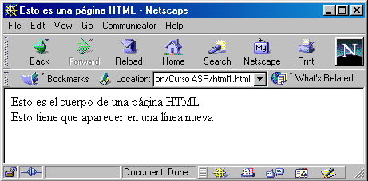
Figura 3.1: Primera página HTML
En cualquier parte de una página HTML, si queremos incluir un comentario deberemos emplear la etiqueta <!-- Comentario -->. Los comentarios no se procesan y no producen una salida visible en la página.
Los saltos de línea que incluyamos en una página son irrelevantes (el navegador no los tiene en cuenta). Para producir un salto de línea se emplea la etiqueta <BR>. Los espacios en blanco también son irrelevantes: si separamos dos palabras por varios espacios en blanco, sólo se tendrá en cuenta uno de ellos. Si queremos incluir varios espacios en blanco, debemos de emplear el código de escape . Por ejemplo, para incluir tres espacios en blanco se tiene que escribir .
3.5.2. Caracteres especiales y secuencias de escape
Algunos sistemas informáticos trabajan con 7 bits en vez de 8. En esos casos, si se desea trabajar con caracteres ASCII de la parte superior de la tabla (128-255), es necesario codificarlos de algún modo. En los documentos HTML se pueden codificar de dos formas, mediante referencias decimales o referencias a entidades.
Las referencias decimales (también llamadas secuencias de escape) usan el formato &#nnn; donde nnn es el código ASCII del carácter. Por ejemplo, Á representa el carácter Á.
Las referencias a entidades usan el formato &aaaa; donde aaaa es una cadena de texto que representa el carácter. Por ejemplo, Á representa el carácter Á.
Además, existen algunos caracteres de la parte inferior de la tabla de caracteres ASCII que poseen un significado especial en HTML, por lo que es necesario codificarlos. En el Cuadro 3.2 figuran los caracteres especiales con su secuencia de escape.
| Carácter | Decimal | Entidad |
|---|---|---|
| " | " | " |
| & | & | & |
| < | < | < |
| > | > | > |
También existen otros caracteres que son difíciles de conseguir desde el teclado, ya que no están representados. En el Cuadro 3.3 figuran algunos de los más significativos.
| Carácter | Decimal | Entidad |
|---|---|---|
| § | § | § |
| © | © | © |
| ® | ® | ® |
| ¶ | ¶ | ¶ |
3.6. Metadatos
La etiqueta <META> permite indicar metadatos‹ 19 › de una forma muy simple. Permite incorporar información sobre el contenido de una página. Esta etiqueta sólo puede aparecer en la sección <HEAD>. Esta etiqueta la emplean los motores de búsqueda, los navegadores y las herramientas de diseño de páginas web.
La etiqueta <META> presenta dos variantes. La sintaxis de estas dos variantes es:
<META HTTP-EQUIV="propiedad" CONTENT="contenido">. El atributo HTTP-EQUIV se emplea cuando la página web se recupera mediante HTTP. Los servidores web pueden usar el nombre de la propiedad para crear una cabecera según el estándar Request for Comments (RFC) 822‹ 20 › en la cabecera de la respuesta HTTP (algunas propiedades de la cabecera no se pueden fijar de esta forma). Por ejemplo, la siguiente etiqueta <META>:
<META HTTP-EQUIV="Expires" CONTENT="Tue, 20 Aug 1996 14:25:27 GMT">
se convierte en la siguiente cabecera HTTP:
Expires: Tue, 20 Aug 1996 14:25:27 GMT
que puede ser usada por la cache del navegador o por los servidores proxy para saber hasta cuando se puede emplear la copia de una página existente en la caché.
| 1 | <META NAME="Author" CONTENT="Sergio Luján Mora"> |
| 2 | <META NAME="Rights" CONTENT="Sergio Luján Mora"> |
| 3 | <META NAME="Description" CONTENT="Una página de prueba"> |
| 4 | <META NAME="Keywords" CONTENT="curso, html, diseño, web"> |
| 5 | <META NAME="Date" CONTENT="Monday, 1 January, 2001"> |
A título de ejemplo, la página principal de la web de la Universidad de Alicante contiene los siguientes metadatos:
| 1 | <META HTTP-EQUIV="pragma" CONTENT="no-cache"> |
| 2 | <META NAME="Author" CONTENT="Universidad de Alicante"> |
| 3 | <META NAME="Copyright" CONTENT=" © Universidad de Alicante"> |
| 4 | <META NAME="Description" CONTENT="Web que recoge toda la ..."> |
| 5 | <META NAME="keywords" CONTENT="Universidad de Alicante, Alicante ..."> |
| 6 | <META NAME="Formatter" CONTENT="Mozilla/4.5 [es](Win98; I)[Netscape]"> |
| 7 | <META NAME="Generator" CONTENT="Mozilla/4.5 [es](Win98; I)[Netscape]"> |
| 8 | <META NAME="robots" CONTENT="index, follow"> |
| 9 | <META HTTP-EQUIV="Content-Language" CONTENT="ES"> |
| 10 | <META HTTP-EQUIV="Content-Script-Type" CONTENT="JavaScript"> |
| 11 | <META HTTP-EQUIV="Content-Type" CONTENT="text/html; charset=iso-8859"> |
3.7. Etiquetas HTML
Existen cientos de etiquetas, cada una con su conjunto de atributos. Además, no existe un estándar que acepten todos los navegadores: los dos principales navegadores, Netscape Navigator y Microsoft Internet Explorer, presentan diferencias entre ellos, aceptando cada uno etiquetas que no acepta el otro. Existe un intento de estandarización por parte de W3C, que periódicamente publica borradores, recomendaciones y estándares definitivos. La última recomendación es XHTML 1.0 (combinación de HTML y XML), que sustituye a HTML 4.01.
Las etiquetas HTML (reconocidas por Netscape Navigator 4.0 y superiores) las podemos clasificar en las siguientes categorías (en esta clasificación una etiqueta sólo aparece en una categoría, pero realmente hay etiquetas que se pueden clasificar en varias categorías):
Vamos a comentar las etiquetas más importantes (las más empleadas) con los atributos más comunes. No es una explicación exhaustiva, pero suficiente para un primer contacto con HTML. En el Apéndice A se puede consultar una relación con todas las etiquetas que acepta Netscape Communicator 4.0.
3.8. Formato del texto
En esta sección vamos a repasar las etiquetas más importantes que permiten asignar formato al texto: los encabezados de sección, los estilos lógicos y físicos, la etiqueta <FONT> ... </FONT> y por último, como alinear el texto.
3.8.1. Encabezados de secciones
Existen seis niveles de encabezados, numerados del 1 al 6, y según tamaños decrecientes: el nivel 1 es la etiqueta <H1> ... </H1> (la más prominente) y el nivel 6 es la etiqueta <H6> ... </H6> (la menos prominente). Los encabezados se suelen mostrar con tipos de letra más grandes, en negrita o más enfatizados que el texto normal. Pero los niveles 5 y 6 aparecen normalmente con un tamaño inferior al del texto normal. El tamaño de cada encabezado lo selecciona el navegador, por lo que la apariencia puede variar significativamente de uno a otro.
Cuando se visualizan, los encabezados comienzan en una línea nueva y se suele dejar un espacio en blanco extra antes de ellos. La sintaxis de esta etiqueta es:
| 1 | <Hn ALIGN="LEFT" | "CENTER" | "RIGHT" | "JUSTIFY"> ... </Hn> |
donde n es un número del 1 al 6 y el atributo ALIGN especifica el alineamiento horizontal del encabezado‹ 21 ›. Por ejemplo, en la Figura 3.2 vemos como se visualiza el siguiente código en un navegador.
| 1 | <HTML> |
| 2 | <BODY> |
| 3 | Texto normal |
| 4 | <H1>Encabezado nivel 1</H1> |
| 5 | <H2>Encabezado nivel 2</H2> |
| 6 | <H3>Encabezado nivel 3</H3> |
| 7 | <H4>Encabezado nivel 4</H4> |
| 8 | <H5>Encabezado nivel 5</H5> |
| 9 | <H6>Encabezado nivel 6</H6> |
| 10 | Texto normal |
| 11 | </BODY> |
| 12 | </HTML> |
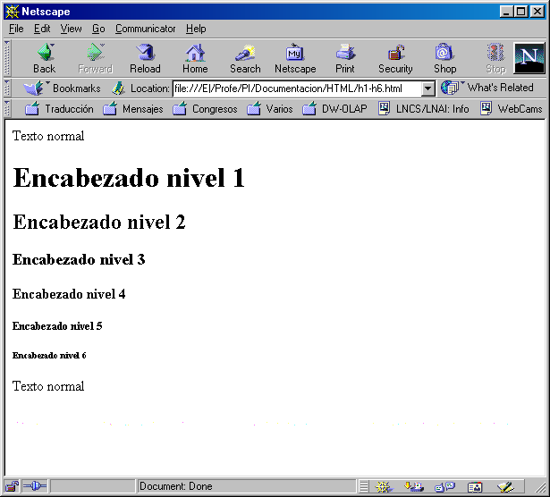
Figura 3.2: Ejemplo de encabezados
3.8.2. Formatos de caracteres
Las siguientes etiquetas se pueden emplear en línea (inline), lo que significa que no interrumpen el fluir del texto (no producen saltos de línea ni nada similar). Por tanto, se pueden aplicar a caracteres individuales.
Los formatos (también llamados estilos) se dividen en lógicos y físicos. Los formatos lógicos dependen del navegador (cada uno lo puede interpretar de distinta forma), mientras que los formatos físicos siempre se representan de la misma forma.
El siguiente código HTML muestra las etiquetas de los formatos más comunes. En la Figura 3.3 vemos como se visualiza en un navegador.
| 1 | <HTML> |
| 2 | <BODY> |
| 3 | Formatos físicos:<BR> |
| 4 | <B>Texto en negrita: <B></B><BR> |
| 5 | <I>Texto en cursiva: <I></I><BR> |
| 6 | <U>Texto subrayado: <U></U><BR> |
| 7 | <TT>Texto en teletipo (fuente fija): <TT></TT><BR> |
| 8 | <STRIKE>Texto tachado: <STRIKE></STRIKE><BR> |
| 9 | <S>También funciona <S></S><BR> |
| 10 | <BR> |
| 11 | Formatos lógicos:<BR> |
| 12 | <CITE>Cita: <CITE></CITE><BR> |
| 13 | <CODE>Código: <CODE></CODE><BR> |
| 14 | <DFN>Definición: <DFN></DFN><BR> |
| 15 | <EM>Enfatizado: <EM></EM><BR> |
| 16 | <KBD>Texto tecleado: <KBD></KBD><BR> |
| 17 | <STRONG>Texto grueso: <STRONG></STRONG><BR> |
| 18 | <VAR>Texto variable: <VAR></VAR><BR> |
| 19 | </BODY> |
| 20 | </HTML> |
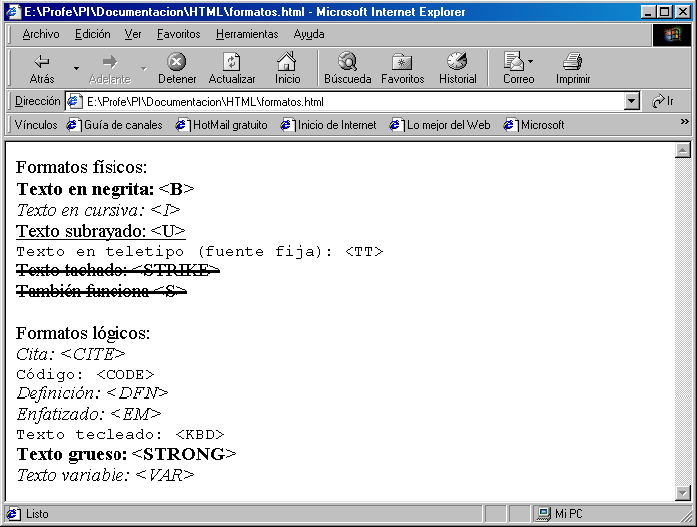
Figura 3.3: Formatos físicos y lógicos
3.8.3. La etiqueta <FONT>
La etiqueta <FONT> ... </FONT> permite modificar el tipo de letra, el tamaño y el color del texto . Todo el texto entre las etiquetas <FONT> ... </FONT> se muestra según los valores especificados en los atributos de la etiqueta.
Para modificar el tipo de letra se emplea el atributo FACE. Se le puede indicar una lista de tipos de letras separados por comas. El navegador comprueba si el primer tipo de letra está disponible, si no es así prueba con el segundo y así sucesivamente. Si ninguno de los tipos de letra está disponible, no se produce ningún cambio en el tipo de letra.
Los tipos de letra pueden ser específicos o genéricos. Entre los primeros, los más empleados son Arial, Courier, Helvetica, Tahoma, Times y Verdana. Los tipos de letra genéricos son serif, sans-serif, cursivev, monospace y fantasy. El siguiente código muestra el uso de distintos tipos de letra. En la Figura 3.4 podemos observar como se visualiza en un navegador. Como se ve en la imagen del navegador, el texto escrito en Helvetica aparece con el tipo de letra por defecto; esto se debe a que en el ordenador en el que se visualiza la página no está disponible el tipo de letra Helvetica.
| 1 | <HTML> |
| 2 | <BODY> |
| 3 | Tipos de letra específicos:<BR> |
| 4 | <FONT FACE="Arial">Texto en Arial</FONT><BR> |
| 5 | <FONT FACE="Helvetica">Texto en Helvetica</FONT><BR> |
| 6 | <FONT FACE="Tahoma">Texto en Tahoma</FONT><BR> |
| 7 | <BR> |
| 8 | Tipos de letra genéricos:<BR> |
| 9 | <FONT FACE="serif">Texto en serif</FONT><BR> |
| 10 | <FONT FACE="sans-serif">Texto en sans-serif</FONT><BR> |
| 11 | <FONT FACE="cursive">Texto en cursive</FONT><BR> |
| 12 | <FONT FACE="monospace">Texto en monospace</FONT><BR> |
| 13 | <FONT FACE="fantasy">Texto en fantasy</FONT><BR> |
| 14 | </BODY> |
| 15 | </HTML> |
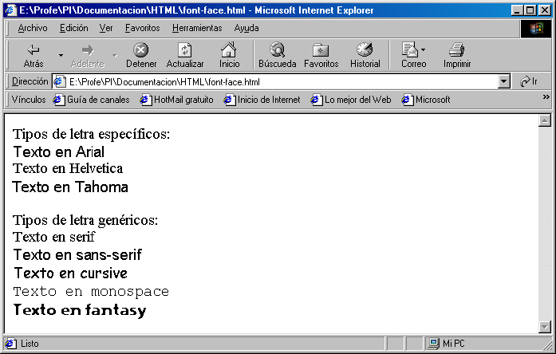
Figura 3.4: Distintos tipos de letra con la etiqueta <FONT>
Para modificar el tamaño se emplea el atributo SIZE. Este atributo define el tamaño de forma relativa, en un intervalo del 1 (letra más pequeña) a 7 (letra más grande). El tamaño base por defecto es 3‹ 22 ›. También se puede indicar un valor relativo al tamaño base si se emplean los signos + o -. Por ejemplo, +2 significa un incremento en dos unidades respecto al tamaño base. En la Figura 3.5 vemos como se visualiza el siguiente código que muestra el uso del atributo SIZE.
| 1 | <HTML> |
| 2 | <BODY> |
| 3 | Distintos tamaños de letra:<BR> |
| 4 | <FONT SIZE="1">Texto en 1</FONT><BR> |
| 5 | <FONT SIZE="2">Texto en 2</FONT><BR> |
| 6 | <FONT SIZE="3">Texto en 3</FONT><BR> |
| 7 | <FONT SIZE="4">Texto en 4</FONT><BR> |
| 8 | <FONT SIZE="5">Texto en 5</FONT><BR> |
| 9 | <FONT SIZE="6">Texto en 6</FONT><BR> |
| 10 | <FONT SIZE="7">Texto en 7</FONT><BR> |
| 11 | </BODY> |
| 12 | </HTML> |
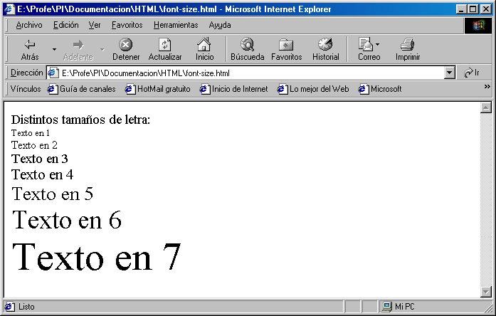
Figura 3.5: Distintos tamaños de letra con la etiqueta <FONT>
3.8.4. Alineamiento del texto
La etiqueta <P> ... </P> se emplea para marcar párrafo de texto. Un párrafo comienza en una línea nueva y el navegador suele dejar un espacio en blanco extra antes del párrafo.
Para alinear el contenido de un párrafo se emplea el atributo ALIGN. El contenido del párrafo puede alinearse a la izquierda (LEFT), a la derecha (RIGHT), centrado (CENTER) o justificado (JUSTIFY). El siguiente código HTML muestra el mismo párrafo alineado de cuatro formas distintas. En la Figura 3.6 podemos ver el código visualizado en un navegador.
| 1 | <HTML> |
| 2 | <BODY> |
| 3 | <P ALIGN="LEFT"> |
| 4 | Los enlaces o hiperenlaces permiten relacionar distintas páginas |
| 5 | entre sí (hipertexto). Esta característica da la posibilidad de |
| 6 | organizar la información en distintas páginas HTML enlazadas, de |
| 7 | forma que el usuario pueda seleccionar la que más le interese en |
| 8 | cada momento. |
| 9 | </P> |
| 10 | <P ALIGN="RIGHT"> |
| 11 | Los enlaces o hiperenlaces permiten relacionar distintas páginas |
| 12 | entre sí (hipertexto). Esta característica da la posibilidad de |
| 13 | organizar la información en distintas páginas HTML enlazadas, de |
| 14 | forma que el usuario pueda seleccionar la que más le interese en |
| 15 | cada momento. |
| 16 | </P> |
| 17 | <P ALIGN="CENTER"> |
| 18 | Los enlaces o hiperenlaces permiten relacionar distintas páginas |
| 19 | entre sí (hipertexto). Esta característica da la posibilidad de |
| 20 | organizar la información en distintas páginas HTML enlazadas, de |
| 21 | forma que el usuario pueda seleccionar la que más le interese en |
| 22 | cada momento. |
| 23 | </P> |
| 24 | <P ALIGN="JUSTIFY"> |
| 25 | Los enlaces o hiperenlaces permiten relacionar distintas páginas |
| 26 | entre sí (hipertexto). Esta característica da la posibilidad de |
| 27 | organizar la información en distintas páginas HTML enlazadas, de |
| 28 | forma que el usuario pueda seleccionar la que más le interese en |
| 29 | cada momento. |
| 30 | </P> |
| 31 | </BODY> |
| 32 | </HTML> |
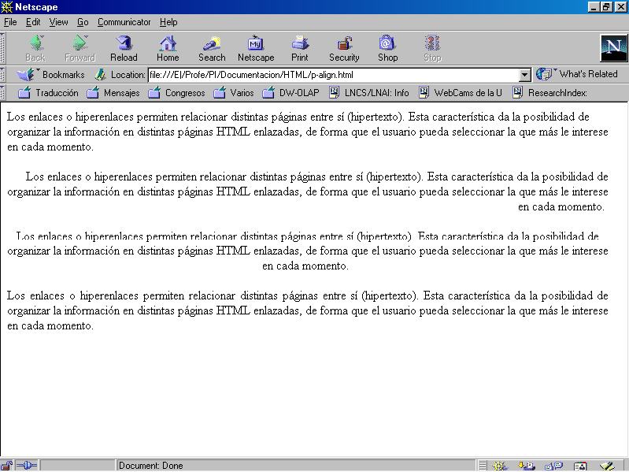
Figura 3.6: Alineamiento de párrafos: izquierda, derecha, centrado y justificado
Los bloques de texto se especifican usando la etiqueta <BLOCKQUOTE> ... </BLOCKQUOTE>. Un bloque de texto aparece sangrado hacia la derecha. Se suele emplear para marcar citas textuales o deniciones de especial relevancia. Los bloques de texto se pueden anidar para producir un mayor sangrado. El siguiente código muestra el empleo de esta etiqueta. En la Figura 3.7 se puede ver como se muestra en un navegador web.
| 1 | <HTML> |
| 2 | <BODY> |
| 3 | Este texto no tiene sangría. |
| 4 | <BLOCKQUOTE> |
| 5 | 1. Un nivel de sangría. |
| 6 | <BLOCKQUOTE> |
| 7 | 2. Dos niveles de sangría. |
| 8 | <BLOCKQUOTE> |
| 9 | 3. Tres niveles de sangría. |
| 10 | </BLOCKQUOTE> |
| 11 | </BLOCKQUOTE> |
| 12 | Volvemos al nivel 1. |
| 13 | </BLOCKQUOTE> |
| 14 | Volvemos a texto |
| 15 | sin sangría. |
| 16 | </BODY> |
| 17 | </HTML> |
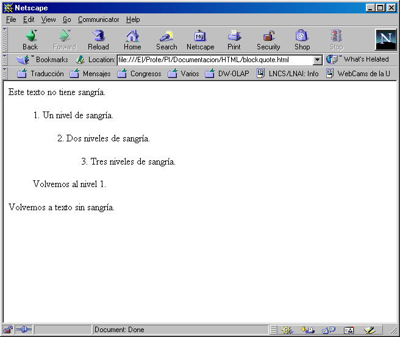
Figura 3.7: Bloques de texto con distinta sangría
3.9. Listas
Las listas permiten organizar la información de una manera lógica, lo que facilita su legibilidad. Existen cinco tipos de listas en HTML: listas de definición, listas ordenadas, listas no ordenadas, listas de directorio y listas de menú. Como las dos últimas listas están obsoletas, ya que se visualizan como las listas no ordenadas, no las vamos a ver.
Las listas se pueden anidar entre sí, incluso si son de distinto tipo. En el caso de anidar listas no numeradas, cada nivel de anidamiento tendrá un tipo de símbolo distinto.
3.9.1. Listas de definición
Una lista de definición se emplea para mostrar términos con sus correspondientes definiciones, como si se tratase de un glosario o diccionario.
Una lista de definición se crea con la etiqueta <DL> ... </DL> (definition list). Contiene una serie de términos, que se definen con la etiqueta <DT> (definition term), y cada término posee una o más definiciones, que se indican cada una con la etiqueta <DD> (definition description). Las definiciones de cada término aparecen con una sangría hacia la derecha.
El siguiente ejemplo muestra como se usan estas etiquetas. Aunque las líneas que contienen las etiquetas <DD> aparecen con unos espacios en blanco al principio, estos no influyen para nada en su visualización. En la Figura 3.8 vemos el resultado que produce este ejemplo.
| 1 | <HTML> |
| 2 | <BODY> |
| 3 | <DL> |
| 4 | <DT>BANCO |
| 5 | <DD>Lugar donde se deposita dinero |
| 6 | <DD>Sitio donde se sienta la gente |
| 7 | <DT>GATO |
| 8 | <DD>Animal de cuatro patas con pelo |
| 9 | <DD>Herramienta para levantar un vehículo |
| 10 | <DT>ORDENADOR |
| 11 | <DD>Aparato electrónico que realiza cálculos |
| 12 | </DL> |
| 13 | </BODY> |
| 14 | </HTML> |
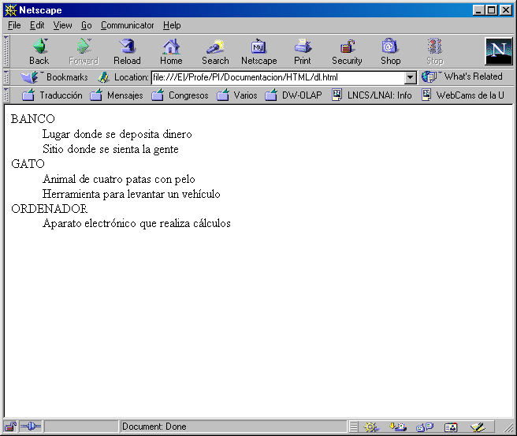
Figura 3.8: Listas de definición
3.9.2. Listas ordenadas
En las listas ordenadas o numeradas, cada elemento aparece numerado. La etiqueta <OL> ... <OL> (ordered list) define una lista de este tipo. Cada elemento se define con la etiqueta <LI> (list item). Esta etiqueta posee dos atributos: START y TYPE.
El atributo START indica el valor desde el que se empieza la numeración; tiene que ser un valor positivo.
El atributo TYPE indica el tipo de numeración de los elementos de la lista. Los posibles valores de este atributos son:
El siguiente ejemplo muestra el uso de esta etiqueta. Además, también se puede ver como se pueden anidar listas (incluir una lista dentro de otra lista). En la Figura 3.9 vemos como se muestra esta página.
| 1 | <HTML> |
| 2 | <BODY> |
| 3 | Lista normal, con anidamiento: |
| 4 | <OL> |
| 5 | <LI>Elemento 1 |
| 6 | <LI>Elemento 2 |
| 7 | <LI>Lista anidada: |
| 8 | <OL> |
| 9 | <LI>Elemento 1 |
| 10 | <LI>Elemento 2 |
| 11 | </OL> |
| 12 | </OL> |
| 13 | Lista numerada con letras en mayúsculas: |
| 14 | <OL TYPE="A"> |
| 15 | <LI>Elemento 1 |
| 16 | <LI>Elemento 2 |
| 17 | </OL> |
| 18 | Lista numerada con números romanos: |
| 19 | <OL TYPE="i"> |
| 20 | <LI>Elemento 1 |
| 21 | <LI>Elemento 2 |
| 22 | </OL> |
| 23 | </BODY> |
| 24 | </HTML> |
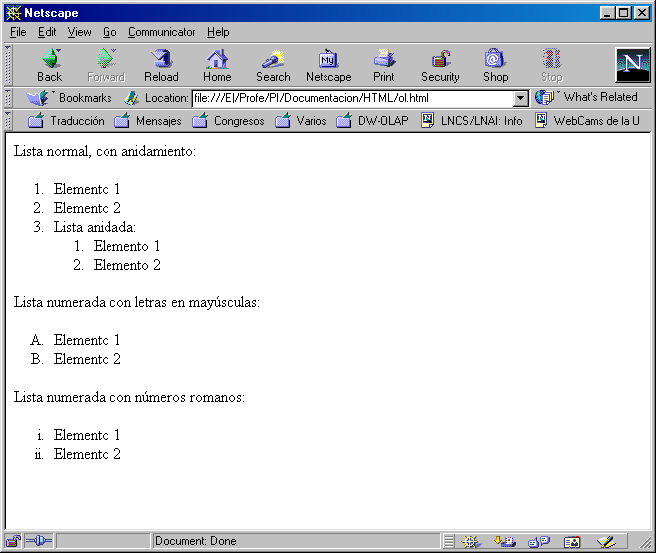
Figura 3.9: Listas ordenadas
3.9.3. Listas no ordenadas
En las listas no ordenadas, los elementos aparecen marcados mediante unos pequeños elementos gráficos, llamados en inglés bullet. La etiqueta <UL> ... </UL> (unordered list) define una lista no ordenada. Cada elemento se define con la etiqueta <LI> (list item).
Esta etiqueta posee el atributo TYPE, que permite cambiar el elemento gráfico empleado para marcar los elementos. Los posibles valores que puede tomar este atributo son:
El siguiente código muestra como se emplea esta etiqueta. Además, en la última lista hay un anidamiento de varias listas. En la Figura 3.10 se puede ver que cuando se anidan varias listas, el elemento gráfico bullet cambia automáticamente, según cual sea el nivel de anidamiento.
| 1 | <HTML> |
| 2 | <BODY> |
| 3 | <UL TYPE="CIRCLE"> |
| 4 | <LI>Elemento 1 |
| 5 | <LI>Elemento 2 |
| 6 | </UL> |
| 7 | <UL TYPE="DISC"> |
| 8 | <LI>Elemento 1 |
| 9 | <LI>Elemento 2 |
| 10 | </UL> |
| 11 | <UL TYPE="SQUARE"> |
| 12 | <LI>Elemento 1 |
| 13 | <LI>Elemento 2 |
| 14 | </UL> |
| 15 | <UL> |
| 16 | <LI>Elemento a: |
| 17 | <UL> |
| 18 | <LI>Elemento b: |
| 19 | <UL> |
| 20 | <LI>Elemento c: |
| 21 | </UL> |
| 22 | </UL> |
| 23 | </UL> |
| 24 | </BODY> |
| 25 | </HTML> |
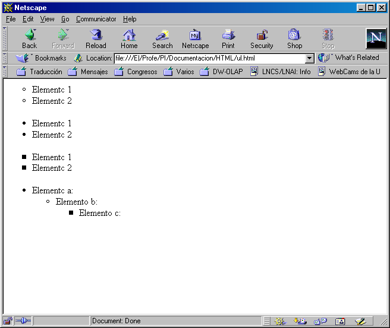
Figura 3.10: Listas no ordenadas
3.10. Colores
En HTML se puede cambiar el color de distintos elementos, como el color de fondo de una página, el color del texto, el color de una tabla, etc. Existen dos formas de especificar los colores:
En el Apéndice B se incluye más información sobre el uso de colores en HTML y como pasar las componentes RGB de decimal a hexadecimal.
3.10.1. Color de fondo de una página
El color de fondo de una página se puede cambiar mediante el atributo BGCOLOR de la etiqueta <BODY> ... </BODY>.
3.10.2. Color del texto
La etiqueta <FONT> ... </FONT> posee el atributo COLOR que permite indicar el color del texto. También se puede cambiar el color del texto para toda una página, el color de los enlaces, el color de los enlaces visitados y el color de los enlaces al activarse. Para ello se emplean los atributos TEXT, LINK, VLINK y ALINK de la etiqueta <BODY> ... </BODY>.
En el siguiente ejemplo, se cambia el color del texto y de los enlaces para que todos tengan el mismo color y no se puedan diferenciar unos de otros.
| 1 | <HTML> |
| 2 | <BODY TEXT="black" LINK="black" VLINK="text" ALINK="black"> |
| 3 | <A HREF="http://www.ua.es">Universidad de Alicante</A> |
| 4 | <BR> |
| 5 | <A HREF="http://www.eps.ua.es">Escuela Politécnica Superior</A> |
| 6 | </BODY> |
| 7 | </HTML> |
3.11. Enlaces
Los enlaces o hiperenlaces permiten relacionar distintas páginas entre sí (hipertexto). Esta característica da la posibilidad de organizar la información en distintas páginas HTML enlazadas, de forma que el usuario pueda seleccionar la que más le interese en cada momento.
Un hiperenlace puede hacer referencia a un punto determinado de la página que lo contiene, a otra página HTML o a un punto determinado de otra página HTML. En los dos últimos casos, la página destino puede residir en el mismo servidor que la página que contiene el hiperenlace o en otro distinto.
La etiqueta que utiliza HTML para definir un hiperenlace es <A> ... </A>. Todo aquello que aparezca en una página HTML entre dichas etiquetas se considera un hiperenlace (será el objeto sensible que al ser pulsado producirá el salto al destino del enlace). Normalmente suele utilizarse texto e imágenes como hiperenlaces.
3.11.1. Enlace a un punto del mismo documento
Un enlace de este tipo consta de dos partes: una referencia y un destino. El destino se identifica por un nombre. La referencia hará alusión al nombre del destino. En una página se pueden incluir varias referencias a un mismo destino, pero no se pueden crear varios destinos con el mismo nombre. La forma de definir este enlace es:
Como puede observarse, en el caso de la referencia el nombre al que hace alusión va precedido del símbolo almohadilla (#), mientras que en el destino no.
En el siguiente código de ejemplo, tenemos un enlace sobre la misma página. En la Figura 3.11 vemos que la palabra enlace es un enlace; al pulsar sobre ella saltamos al destino que podemos ver en la Figura 3.12.
| 1 | <HTML> |
| 2 | <HEAD> |
| 3 | <TITLE>Esto es una página HTML</TITLE> |
| 4 | </HEAD> |
| 5 | <BODY> |
| 6 | Aquí tenemos un <A HREF="#destino">enlace</A> sobre la misma |
| 7 | página. Hay que dejar muchas líneas en blanco para que se |
| 8 | pueda comprobar el efecto. |
| 9 | <BR><BR><BR><BR><BR><BR><BR><BR><BR><BR><BR><BR> |
| 10 | <A NAME="destino">Esto</A> es el destino del enlace que aparece |
| 11 | al principio de la página. |
| 12 | </BODY> |
| 13 | </HTML> |
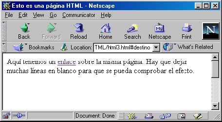
Figura 3.11: Enlace a un destino interno
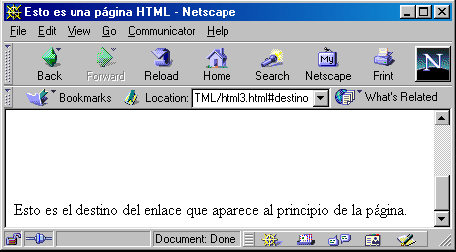
Figura 3.12: Destino del enlace interno
3.11.2. Enlace a otro documento
Para incluir un enlace en un documento a otro documento, simplemente hay que incluir en el documento origen una referencia al documento destino. En este último no hace falta indicar que es destino de un enlace. La forma de definir este enlace es:
Muy importante: cuando indiquemos el nombre del documento destino (pagina.html), hay que tener mucho cuidado con las mayúsculas y minúsculas. En el siguiente ejemplo tenemos dos páginas con colores de fondo distintos; en cada una de ellas figura un enlace a la otra.
| 1 | <HTML> |
| 2 | <HEAD> |
| 3 | <TITLE>Esto es una página HTML</TITLE> |
| 4 | </HEAD> |
| 5 | <BODY BGCOLOR="#FFBBBB"> |
| 6 | <B>Aquí tenemos un <A HREF="html4b.html">enlace</A> a otra |
| 7 | página que tiene el fondo azul.</B> |
| 8 | </BODY> |
| 9 | </HTML> |
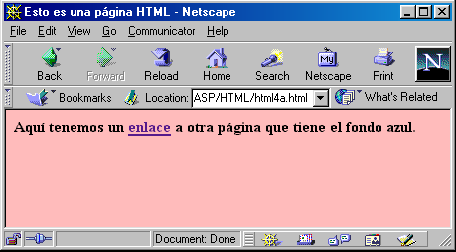
Figura 3.13: Página con enlace a otra página
| 1 | <HTML> |
| 2 | <HEAD> |
| 3 | <TITLE>Esto es una página HTML</TITLE> |
| 4 | </HEAD> |
| 5 | <BODY BGCOLOR="#BBBBFF"> |
| 6 | <B>Aquí tenemos un <A HREF="html4a.html">enlace</A> a otra |
| 7 | página que tiene el fondo rojo.</B> |
| 8 | </BODY> |
| 9 | </HTML> |
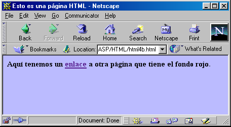
Figura 3.14: Página con enlace a otra página
3.11.3. Enlace a un punto de otro documento
Este tipo de enlace es una combinación de los dos anteriores. La forma de definir este enlace es:
En el siguiente ejemplo tenemos una página con dos enlaces a la misma página, pero a distintos destinos dentro de esa página.
| 1 | <HTML> |
| 2 | <HEAD> |
| 3 | <TITLE>Esto es una página HTML</TITLE> |
| 4 | </HEAD> |
| 5 | <BODY> |
| 6 | <B>Aquí tenemos un <A HREF="html5b.html#destino1">enlace</A> |
| 7 | a un destino de otra página. |
| 8 | <BR><BR> |
| 9 | Aquí tenemos otro <A HREF="html5b.html#destino2">enlace</A> |
| 10 | a otro destino de la misma página que antes. |
| 11 | </B> |
| 12 | </BODY> |
| 13 | </HTML> |
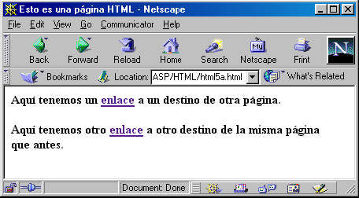
Figura 3.15: Página con dos enlaces a otra página
| 1 | <HTML> |
| 2 | <HEAD> |
| 3 | <TITLE>Esto es una página HTML</TITLE> |
| 4 | </HEAD> |
| 5 | <BODY> |
| 6 | <B>Aquí tenemos un <A NAME="destino1">destino</A>, el número 1. |
| 7 | <BR><BR><BR><BR><BR><BR><BR><BR> |
| 8 | <BR><BR><BR><BR><BR><BR><BR><BR> |
| 9 | Aquí tenemos otro <A NAME="destino2">destino</A>, el número 2. |
| 10 | </B> |
| 11 | </BODY> |
| 12 | </HTML> |
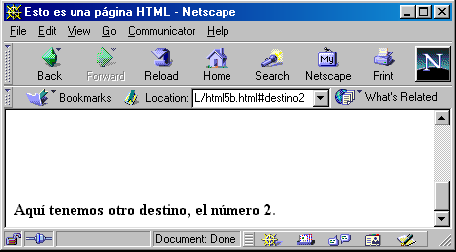
Figura 3.16: Página destino de los enlaces
3.12. Tablas
Hasta que aparecieron las tablas en el lenguaje HTML, la única posibilidad de tabular cosas en una página consistía en usar texto con preformato (<PRE> ... </PRE>) y colocar manualmente los espacios hasta que las columnas estuviesen perfectamente alineadas. Este proceso, además de ser realmente tedioso, no ofrece resultados con la vistosidad deseada.
Las tablas se construyen siguiendo una serie de reglas sencillas:
El siguiente ejemplo muestra una tabla con bordes formada por nueve celdas, de las que tres forman parte del encabezado. La tabla se ha dividido en tres filas y tres columna. En la Figura 3.17 vemos como se ve esta página en una navegador.
| 1 | <HTML> |
| 2 | <BODY> |
| 3 | <TABLE BORDER="1"> |
| 4 | <TR> |
| 5 | <TH>Cabecera 1</TH> |
| 6 | <TH>Cabecera 2</TH> |
| 7 | <TH>Cabecera 3</TH> |
| 8 | </TR> |
| 9 | <TR> |
| 10 | <TD>Elemento (1, 1)</TD> |
| 11 | <TD>Elemento (1, 2)</TD> |
| 12 | <TD>Elemento (1, 3)</TD> |
| 13 | </TR> |
| 14 | <TR> |
| 15 | <TD>Elemento (2, 1)</TD> |
| 16 | <TD>Elemento (2, 2)</TD> |
| 17 | <TD>Elemento (2, 3)</TD> |
| 18 | </TR> |
| 19 | </TABLE> |
| 20 | </BODY> |
| 21 | </HTML> |
Figura 3.17: Tabla sencilla
Los atributos más importantes de la etiqueta <TABLE> son:
Los atributos más importantes de las etiquetas <TR>, <TH> y <TD> son:
3.12.1. Tablas invisibles
Se conoce como tablas invisibles a aquellas que no poseen borde (BORDER="0"). Las tablas invisibles son muy útiles para distribuir los distintos elementos en una página HTML.
Por ejemplo, mediante tablas invisibles se puede mostrar el texto con márgenes a la izquierda y a la derecha, mostrar texto a varias columnas, dividir una imagen en diferentes ficheros y que se muestre como si no estuviese dividida, etc.
3.12.2. Tablas como marcos
Las tablas son muy útiles para crear marcos alrededor del texto o cualquier otro elemento de una página HTML. Se pueden conseguir efectos muy elegantes y a su vez sencillos de realizar mediante diversas tablas anidadas. Por ejemplo, el siguiente código, cuyo resultado se muestra en la Figura 3.18, muestra un texto sobre un fondo rojo rodeado de un marco amarillo en una página cuyo fondo es de color naranja. El tamaño de las celdas de la tabla exterior se ha modificado mediante el atributo CELLPADDING="10" para obtener un marco más ancho.
| 1 | <HTML> |
| 2 | <BODY BGCOLOR="orange"> |
| 3 | <CENTER> |
| 4 | <TABLE BORDER="0" BGCOLOR="yellow" CELLPADDING="10"> |
| 5 | <TR><TD> |
| 6 | <TABLE BORDER="0" BGCOLOR="red"> |
| 7 | <TR><TD> |
| 8 | <FONT SIZE="5">HTML útil y práctico</FONT> |
| 9 | </TD></TR> |
| 10 | </TABLE> |
| 11 | </TD></TR> |
| 12 | </TABLE> |
| 13 | </CENTER> |
| 14 | </BODY> |
| 15 | </HTML> |
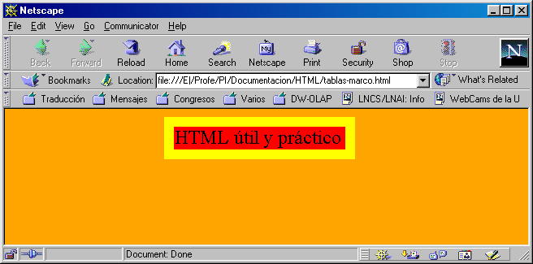
Figura 3.18: Tablas como marcos
3.13. Imágenes
Al inicio de la web, el empleo de imágenes en los documentos HTML era muy escaso‹ 23 ›. Sin embargo, hoy es todo lo contrario y es muy difícil encontrar páginas que no empleen una gran cantidad de imágenes.
Los dos formatos de imagen que admiten la mayoría de los navegadores son Graphics Interchange Format (GIF) y Joint Photographic Experts Group (JPEG). Las características básicas de ambos formatos se han resumido en el Cuadro 3.4.
| Característica | GIF | JPEG |
|---|---|---|
| Colores | 256 (8 bits) | 16 777 216 (24 bits) |
| Transparencia | Sí | No |
| Animación | Sí | No |
| Compresión | Sin perdidas | Con perdidas |
| Dibujo | Sí | No |
| Fotografía | No | Sí |
También existe el formato PNG, que se ha creado como sustituto de GIF. Este formato gráfico se ha creado específicamente para Internet y otras redes de ordenadores. Sus características más importantes son: transparencia alfa, color de 24 bits y una compresión mejor que GIF. Además, emplea compresión sin pérdidas‹ 24 ›. Aunque Microsoft Internet Explorer y Netscape Communicator en sus últimas versiones ya lo soportan, aún no se encuentra muy extendido su uso.
3.13.1. Etiqueta <IMG>
La etiqueta HTML que permite insertar una imagen en un documento es <IMG>. Una imagen se puede colocar en cualquier punto de un documento: en un enlace, en una tabla, etc. Los atributos más importantes de esta etiqueta son:
Se recomienda indicar siempre la anchura y la altura de cada imagen con los atributos WIDTH y HEIGHT, ya que así la visualización de las páginas es más rápida‹ 25 ›.
El siguiente código muestra como se emplean las imágenes. La página está formada por una tabla con cuatro celdas. En cada celda se muestra la misma imagen con un alineamiento distinto. Además, la última imagen también posee un borde. En la Figura 3.19 se puede observar como se visualiza este código en un navegador.
| 1 | <HTML> |
| 2 | <BODY> |
| 3 | <TABLE BORDER="0"> |
| 4 | <TR> |
| 5 | <TD> |
| 6 | <IMG SRC="foto.jpg" WIDTH="134" HEIGHT="191" ALIGN="TEXTTOP"> |
| 7 | El manitas de la casa |
| 8 | </TD> |
| 9 | <TD> |
| 10 | <IMG SRC="foto.jpg" WIDTH="134" HEIGHT="191" ALIGN="MIDDLE"> |
| 11 | El manitas de la casa |
| 12 | </TD> |
| 13 | </TR> |
| 14 | <TR> |
| 15 | <TD> |
| 16 | <IMG SRC="foto.jpg" WIDTH="134" HEIGHT="191" ALIGN="BOTTOM"> |
| 17 | El manitas de la casa |
| 18 | </TD> |
| 19 | <TD> |
| 20 | <IMG SRC="foto.jpg" WIDTH="134" HEIGHT="191" BORDER="10"> |
| 21 | El manitas de la casa |
| 22 | </TD> |
| 23 | </TR> |
| 24 | </TABLE> |
| 25 | </BODY> |
| 26 | </HTML> |
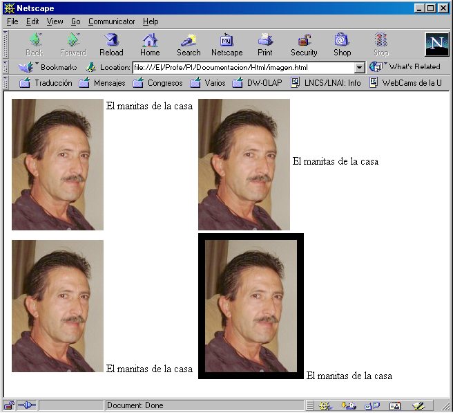
Figura 3.19: Imágenes con distinto alineamiento del texto
3.13.2. Imágenes como fondo de una página
La etiqueta <BODY> ... </BODY> posee el atributo BACKGROUND que permite mostrar una imagen como fondo de una página. Si la imagen tiene un tamaño menor que la ventana del navegador, la imagen se muestra en forma de "mosaico" hasta cubrir toda la superficie de la ventana.
3.14. Formularios
Los formularios son la herramienta que ofrece HTML para poder obtener información de un usuario que visita una página HTML y enviarla al servidor web para su procesamiento.
Un formulario contiene dos tipos de elementos básicos: campos de datos (cuadros de texto, listas de selección, casillas de verificación) y de control (botones).
Dentro de una página HTML se puede incluir más de un formulario, pero teniendo en cuenta que no pueden anidarse ni solaparse. El servidor web sólo podrá recibir la información introducida en uno de ellos (sólo se envía la información de uno de los formularios al servidor).
La estructura básica de un formulario es:
| 1 | <FORM NAME="nombre" ACTION="pagina.html" METHOD="metodo"> |
| 2 | Controles del formulario |
| 3 | </FORM> |
El sentido de cada una de las líneas es:
3.14.1. Controles de un formulario
Un formulario puede contener los siguiente controles:
Para que los datos introducidos en un formulario se envíen al servidor, todo formulario tiene que tener un botón de tipo TYPE="SUBMIT", que envía automáticamente los datos. Este botón se puede sustituir por un botón normal TYPE="BUTTON", pero entonces el envío se tiene que realizar manualmente mediante código de script.
Conviene dar un nombre a los campos que coloquemos en un formulario, ya que al enviar la información, ésta se transmite como pares nombre-valor. Para ello, todas las etiquetas de los controles poseen el atributo NAME para asignar un nombre al control, que deberá ser un nombre único, es decir, ningún otro control tendrá que tener el mismo nombre (excepto en el caso de los botones de radio), y el atributo VALUE para asignar un valor (todas las etiquetas tienen este atributo excepto <INPUT TYPE="IMAGE">, <SELECT> ... </SELECT> y <TEXTAREA> ... </TEXTAREA>). En los botones, el atributo VALUE modifica el texto que muestra el botón.
El siguiente código genera una página HTML con un formulario que contiene un campo de texto, un campo de contraseña, dos campos excluyentes con el mismo nombre (y por tanto sólo se puede elegir una de las dos opciones), dos campos de verificación, una lista de selección, un área de texto y dos botones (para enviar información y borrar). En la Figura 3.20 se muestra el formulario tal como se ve en un navegador.
| 1 | <HTML> |
| 2 | <HEAD> |
| 3 | <TITLE>Esto es una página HTML con formularios</TITLE> |
| 4 | </HEAD> |
| 5 | <BODY> |
| 6 | Esto es el cuerpo de una página HTML. Esta página posee un formulario: |
| 7 | <HR> |
| 8 | <FORM NAME="miFormulario" ACTION="procesa.asp" METHOD="POST"> |
| 9 | Cuadro de texto: <INPUT TYPE="TEXT" NAME="control1a" VALUE="Algo"> |
| 10 | <BR> |
| 11 | Cuadro de texto contraseña: <INPUT TYPE="PASSWORD" NAME="control1b"> |
| 12 | <BR><BR> |
| 13 | Botones de radio: |
| 14 | <INPUT TYPE="RADIO" NAME="control2" VALUE="1">Opción 1 |
| 15 | <INPUT TYPE="RADIO" NAME="control2" VALUE="2">Opción 2 |
| 16 | <BR><BR> |
| 17 | Casilla de verificación: |
| 18 | <INPUT TYPE="CHECKBOX" NAME="control3a" VALUE="1">Opción 1 |
| 19 | <INPUT TYPE="CHECKBOX" NAME="control3b" VALUE="2">Opción 2 |
| 20 | <BR><BR> |
| 21 | Lista de selección: |
| 22 | <SELECT NAME="control4"> |
| 23 | <OPTION VALUE="ali">Alicante</OPTION> |
| 24 | <OPTION VALUE="val">Valencia</OPTION> |
| 25 | <OPTION VALUE="cas">Castellón</OPTION> |
| 26 | </SELECT> |
| 27 | <BR><BR> |
| 28 | Area de texto: <TEXTAREA NAME="control5"></TEXTAREA> |
| 29 | <BR><BR> |
| 30 | <INPUT TYPE="SUBMIT" VALUE="Enviar"> |
| 31 | <INPUT TYPE="RESET" VALUE="Borrar"> |
| 32 | </FORM> |
| 33 | <HR> |
| 34 | </BODY> |
| 35 | </HTML> |
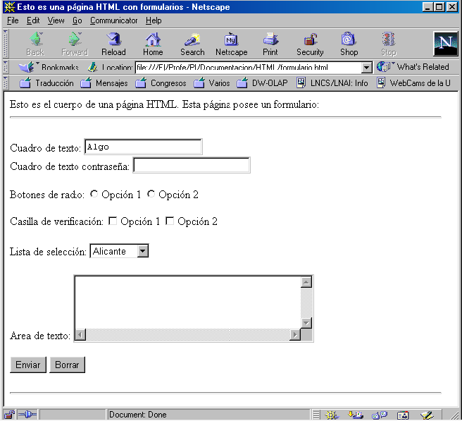
Figura 3.20: Formulario con distintos controles
3.14.2. Campos de verificación
Los campos de verificación (<INPUT TYPE="CHECKBOX">) poseen dos valores: activado y desactivado. Si al enviarse un formulario un campo de verificación está activo, se envía al servidor el valor indicado por VALUE. Distintos campos de verificación pueden tener el mismo nombre (NAME), aunque no es lo usual ya que "complica" la programación de la aplicación web en el servidor.
Si se desea que por defecto un campo de verificación aparezca activado, se tiene que incluir el atributo CHECKED en la etiqueta <INPUT TYPE="CHECKBOX">.
3.14.3. Campos excluyentes
Los campos excluyentes o botones de radio (<INPUT TYPE="RADIO">) tienen sentido cuando se emplean varios a la vez. Un grupo de botones de radio está formado por varios botones de radio que tienen todos el mismo nombre (NAME). En un grupo de botones de radio sólo un botón de radio puede estar seleccionado en un instante. Un formulario puede contener distintos grupos de botones de radio.
Los botones de radio también poseen el atributo CHECKED que permite indicar un botón de radio por defecto.
3.14.4. Campos de texto
En los campos de texto normal (<INPUT TYPE="TEXT">) y de contraseña (<INPUT TYPE="PASSWORD">) se puede escribir una cadena de caracteres. Se puede emplear el atributo SIZE para especificar el tamaño "visual" del cuadro de texto. Es decir, se puede indicar cuantos caracteres se pueden visualizar en un momento dado.
No confundir este atributo con MAXLENGTH, que especifica el número máximo de caracteres que se pueden introducir. Si no se especifica nada, se pueden introducir tantos caracteres como se desee.
3.14.5. Listas de selección
Las listas de selección se crean con la etiqueta <SELECT> ... </SELECT>. En las listas de selección se muestra una serie de opciones de las que el usuario puede elegir una. Si se añade el atributo MULTIPLE, el usuario puede elegir múltiples opciones‹ 28 ›. El atributo SIZE permite indicar cuantas opciones de la lista se visualizan simultáneamente.
Cada opción de una lista de selección se indica con la etiqueta <OPTION>. Cada opción puede tener asociado un valor (VALUE), que es el valor que se enviará al servidor. Si se desea que una opción aparezca marcada por defecto se tiene que añadir a la opción el atributo SELECTED.
El siguiente ejemplo muestra tres listas: una lista normal, una lista normal que muestra tres opciones a la vez y posee una seleccionada por defecto y una lista múltiple. En la Figura 3.21 se puede observar como se visualiza este código en un navegador.
| 1 | <HTML> |
| 2 | <BODY> |
| 3 | <FORM> |
| 4 | Lista de selección normal: |
| 5 | <SELECT NAME="provincia"> |
| 6 | <OPTION VALUE="1">Alicante |
| 7 | <OPTION VALUE="2">Valencia |
| 8 | <OPTION VALUE="3">Castellón |
| 9 | </SELECT> |
| 10 | <BR><BR><BR> |
| 11 | Lista de selección normal de tamaño 3: |
| 12 | <SELECT NAME="universidad" SIZE="3"> |
| 13 | <OPTION VALUE="uv">Universidad de Valencia |
| 14 | <OPTION VALUE="uji">Universidad Jaime I |
| 15 | <OPTION VALUE="ua" SELECTED>Universidad de Alicante |
| 16 | <OPTION VALUE="upv">Universidad Politécnica de Valencia |
| 17 | <OPTION VALUE="umh">Universidad Miguel Hernández |
| 18 | </SELECT> |
| 19 | <BR><BR><BR> |
| 20 | Lista de selección múltiple: |
| 21 | <SELECT NAME="departamento" MULTIPLE> |
| 22 | <OPTION VALUE="dlsi">D. de Lenguajes y Sistemas Informáticos |
| 23 | <OPTION VALUE="damma">D. de Análisis M. y M. Aplicada |
| 24 | <OPTION VALUE="dfists">D. de Física, Ingeniería de Sistemas y ... |
| 25 | <OPTION VALUE="dagr">D. de Análisis Geográfico Regional |
| 26 | <OPTION VALUE="mmlab">Laboratorio Multimedia |
| 27 | </SELECT> |
| 28 | </FORM> |
| 29 | </BODY> |
| 30 | </HTML> |
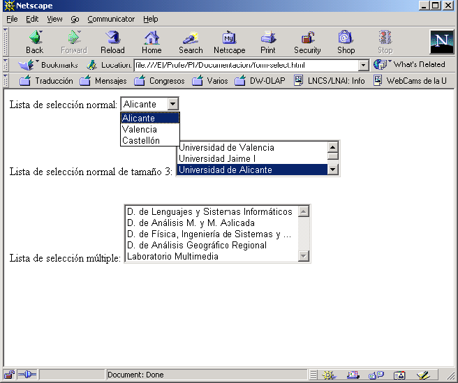
Figura 3.21: Distintas listas de selección
3.14.6. Áreas de texto
La etiqueta <TEXTAREA> ... </TEXTAREA> define un área de texto donde se pueden escribir varias líneas de texto. Esta etiqueta posee dos atributos que permiten modificar su tamaño. El atributo COLS indica el número de caracteres por línea que se pueden mostrar sin tener que realizar scroll. El atributo ROWS define el número de líneas que se pueden mostrar sin realizar scroll.
Si se quiere que el área de texto muestre un texto por defecto, se puede incluir entre las etiquetas de inicio y fin. El siguiente ejemplo muestra dos áreas de texto de distinto tamaño, una de ellas con un texto por defecto. En la Figura 3.22 se puede ver esta página visualizada en un navegador. Se pueden observar las barras de desplazamiento vertical y horizontal.
| 1 | <HTML> |
| 2 | <BODY> |
| 3 | <FORM> |
| 4 | Área 1: |
| 5 | <TEXTAREA ROWS="2" COLS="40">Texto por defecto...</TEXTAREA> |
| 6 | <BR> |
| 7 | Área 2: |
| 8 | <TEXTAREA ROWS="4" COLS="20"></TEXTAREA> |
| 9 | </FORM> |
| 10 | </BODY> |
| 11 | </HTML> |
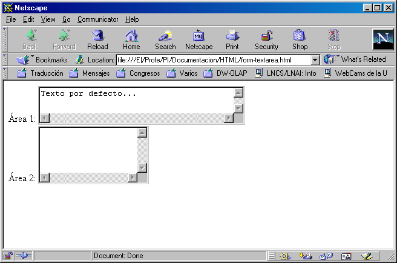
Figura 3.22: Áreas de texto de distinto tamaño
3.15. Marcos
Un marco (frame) es una región de una ventana que actúa como si fuera una ventana ella misma. La ventana principal puede contener múltiples marcos, de forma que diferentes regiones de la ventana muestren diferentes contenidos. A su vez, un marco puede contener otros marcos.
Normalmente, los marcos se emplean para dividir la ventana del navegador en dos partes: en una de ellas, la más pequeña, se muestra un índice del sitio web (esta parte no varía); la otra, la más grande, modifica su contenido según los enlaces que se pulsen en el índice.
Para definir los marcos se emplean las tres etiquetas siguientes: <FRAMESET> ... </FRAMESET>, <FRAME> y <NOFRAMES> ... </NOFRAMES>.
La etiqueta <FRAMESET> ... </FRAMESET> define un conjunto de marcos que van a aparecer en la ventana. Esta etiqueta contiene una o más etiquetas <FRAME> que definen cada uno de los marcos. Los principales atributos de esta etiqueta son:
| 1 | <FRAMESET COLS="30%,70%"> |
| 1 | <FRAMESET ROWS="10%,80%,10%"> |
La etiqueta <FRAMESET> ... </FRAMESET> define el número de filas (ROWS) o columnas (COLS) en que se va a dividir la ventana. Los dos atributos no se pueden emplear simultáneamente. Esta etiqueta se puede anidar, de forma que dentro de un <FRAMESET> se puede incluir otro <FRAMESET>. De este modo, se pueden combinar filas con columnas.
La etiqueta <FRAME> define un marco, que es una región de una ventana con contenido propio y que se puede navegar de forma independiente. Cada marco tiene su propia URL que define el contenido que se va a mostrar. Los atributos más importantes de esta etiqueta son:
Por último, la etiqueta <NOFRAMES> ... </NOFRAMES> se emplea para mostrar contenido en los navegadores que no pueden mostrar marcos. Los navegadores que sí que pueden mostrar marcos ignoran todo el contenido de esta etiqueta.
Lo interesante de los marcos es que se puede variar el contenido de los mismos de forma independiente. Desde un marco se puede modificar el contenido de otro. Para ello, se tiene que emplear un enlace (<A> ... </A>) con el atributo TARGET. Este atributo debe de tomar el nombre del marco que se quiere modificar (el nombre se habrá indicado en la etiqueta <FRAME> con el atributo NAME).
En el siguiente ejemplo, la página frame1.html crea una venta con dos marcos (marcoIzq y marcoDer). En el marco izquierdo se muestra la página frame1a.html; en el marco derecho se muestran las páginas frame1b.html y frame1c.html según se seleccione en los enlaces que contiene marcoIzq. En la Figura 3.23 vemos el resultado de mostrar estas páginas en un navegador.
| 1 | <HTML> |
| 2 | <HEAD> |
| 3 | <TITLE>Ejemplo de marcos</TITLE> |
| 4 | </HEAD> |
| 5 | <FRAMESET COLS="20%,80%" BORDER=10> |
| 6 | <FRAME SRC="frame1a.html" NAME="marcoIzq"> |
| 7 | <FRAME SRC="frame1b.html" NAME="marcoDer"> |
| 8 | <NOFRAMES> |
| 9 | Su navegador de Internet no permite mostrar marcos |
| 10 | </NOFRAMES> |
| 11 | </FRAMESET> |
| 12 | </HTML> |
| 1 | <HTML> |
| 2 | <HEAD> |
| 3 | <TITLE>Ejemplo de marcos</TITLE> |
| 4 | </HEAD> |
| 5 | <BODY> |
| 6 | Esta página tiene que aparecer a la izquierda. |
| 7 | <BR><BR> |
| 8 | Si pincha <A HREF="frame1b.html" TARGET="marcoDer">aquí</A>, |
| 9 | a la derecha tiene que aparecer la página 1. |
| 10 | <BR><BR> |
| 11 | Si pincha <A HREF="frame1c.html" TARGET="marcoDer">aquí</A>, |
| 12 | a la derecha tiene que aparecer la página 2. |
| 13 | </BODY> |
| 14 | </HTML> |
| 1 | <HTML> |
| 2 | <HEAD> |
| 3 | <TITLE>Ejemplo de marcos</TITLE> |
| 4 | </HEAD> |
| 5 | <BODY> |
| 6 | Esta es la página <B>1</B>. |
| 7 | </BODY> |
| 8 | </HTML> |
| 1 | <HTML> |
| 2 | <HEAD> |
| 3 | <TITLE>Ejemplo de marcos</TITLE> |
| 4 | </HEAD> |
| 5 | <BODY> |
| 6 | Esta es la página <B>2</B>. |
| 7 | </BODY> |
| 8 | </HTML> |
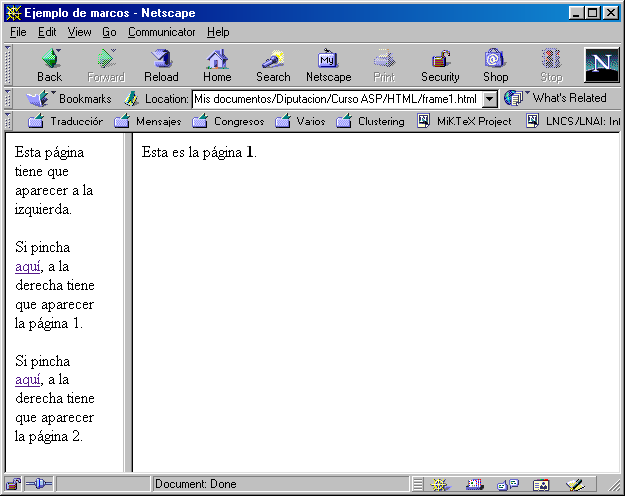
Figura 3.23: Página con dos marcos verticales
3.16. Guía de estilo
A continuación hemos incluido una serie de indicaciones que pueden ayudar a la hora de crear páginas web.
3.16.1. Organizar el código HTML
Si se crea una página web directamente con el código HTML, es recomendable hacerlo como si se estuviese programando. Es decir, organizar el código para que sea más fácil su lectura, poner comentarios, etc. Todo ello supone un trabajo extra, pero facilita el mantenimiento de las páginas.
3.16.2. Cuidado con los colores
Hay que llevar mucho cuidado con las combinaciones de colores que se emplean, ya que algunas cuestan mucho de leer.
Si tenemos páginas con mucho texto, es conveniente usar una combinación de colores de alto contraste, que facilite la lectura: un color oscuro sobre un fondo claro (negro o azul sobre blanco o un color crema) o al revés (un color claro para el texto sobre un fondo oscuro).
3.16.3. Cuidado con los tipos de letra
El uso de distintos tipos de letra puede originar bastantes problemas. Se suele recomendar un tipo de letra sans-serif (como Arial, Helvetica, Tahoma o Verdana) para la lectura de texto en pantalla.
A menudo, se elige un tipo de letra para un sitio web y aparece en algunas partes de los documentos texto en otro tipo de letra. No causa un buen efecto en el visitante "sufrir" este problema.
Por último, hay que intentar elegir tipos de letra "estándar". Si empleamos un tipo poco usual, seguramente la mayoría de la gente no lo tendrá instalado en sus ordenadores y las páginas no se visualizarán correctamente.
3.16.4. Sacar partido al hipertexto
Las referencias cruzadas permiten abordar un mismo tema en distintos niveles de profundidad. Se puede permitir al usuario pasar de largo información técnica o conceptos avanzados de un tema, estableciendo enlaces a textos más extensos. En general, podemos disponer de una página corta, con una presentación de la información escueta, que lleve a páginas que contengan detalles acerca de los temas tratados.
3.16.5. Usar las capacidades multimedia
Como se suele decir, una imagen vale más que mil palabras. Pero hay que tener cuidado: el uso de muchas imágenes puede confundir al usuario. Además, hay que tener en cuenta la velocidad de transferencia: las imágenes emplean muchos kilobytes, lo que aumenta el tiempo que tarda en cargarse una página. Hay que ponerse como límite de 20 a 30 Kb de imágenes por página.
Un truco muy importante: una vez cargada una imagen, el navegador la almacena en la cache; cuando volvamos a emplear esa misma imagen en otra página, no necesitará descargarla otra vez. Para que nuestras páginas se carguen más rápidamente, es aconsejable combinar los mismos elementos gráficos (iconos, líneas, imágenes de fondo, etc.) en todas nuestras páginas.
Por último, mucho cuidado con las imágenes de fondo: si tienen muchos colores y detalles pueden ocultar otros detalles de la página e impedir la lectura correcta del texto.
3.16.6. Identidad corporativa
Hay que intentar conseguir una "identidad corporativa" en todas las páginas: emplear los mismos tipos de letra, colores, imágenes de fondo, iconos, etc., para dotar a las páginas de un estilo homogéneo. De esta forma, el usuario se sentirá "inmerso" en las páginas.
3.16.7. Permitir que los usuarios se comuniquen
En las páginas hay que incluir una dirección de contacto para que los usuarios se puedan comunicar. De este modo, se podrán recibir sugerencias, indicaciones de cómo mejorar las páginas o errores localizados.
3.16.8. Facilitar las búsquedas
Una adecuada clasificación y exposición de la información que contienen nuestras páginas facilitará la navegación de los usuarios. En general, la página principal (homepage) debería presentar en una sola página toda la información disponible en nuestro servidor.
3.16.9. Revisar las páginas periódicamente
No hay nada peor que encontrar enlaces rotos: enlaces que apuntan a páginas que no existen, porque se hayan borrado, movido de sitio o falle la ruta de acceso. Una revisión periódica ahorra al usuario muchos problemas. Además, es importante indicar la fecha de la última modificación y las novedades añadidas. Esto permite, entre otras cosas, que el usuario se cerciore de la seriedad del autor de las páginas y facilita la navegación a los usuarios asiduos.
Si una página aparece con un signo "en construcción" y su última revisión es del año anterior, el usuario pensará que es mejor buscar lo que quiere en otra parte.
3.16.10. Los enlaces
La elección del lugar apropiado para poner los enlaces es crucial para una correcta presentación del hipertexto. Por ejemplo, compárense los dos siguientes trozos de código HTML. Es evidente que la primera opción es mucho mejor que la segunda.
| 1 | La <A HREF="/concejalias/turismo">Concejalía de Turismo</A> se |
| 2 | encarga de gestionar el turismo rural y de playa ... |
| 1 | La Concejalía de Turismo se encarga de gestionar el turismo rural |
| 2 | y de playa ... (<A HREF="/concejalias/turismo">haga click aquí |
| 3 | para ver más información acerca de la Concejalía de Turismo</A>). |
En los primeros años de la web había que poner haga click porque la gente no estaba acostumbrada a los enlaces, pero eso ya es historia.
‹ 10 › Conseil Europeen pour le Recherche Nucleaire.
‹ 11 › Tim Berners-Lee, Robert Cailliau, Jean-François Groff, Bernd Pollermann. World-Wide Web: The Information Universe. Electronic Networking: Research, Applications and Policy, Vol. 1, No. 2, Meckler, Westport CT, primavera 1992.
‹ 12 › Defense Advanced Research Projects Agency.
‹ 13 › Institut National de Recherche en Informatique et Automatique.
‹ 14 › Algunas versiones, como HTML+ o HTML 3.0 nunca llegaron a estándar.
‹ 15 › Las páginas estáticas también pueden mostrar datos procedentes de una base de datos mediante la técnica snap shot. La información de la base de datos se convierte en HTML de forma manual, automáticamente cuando ocurre un suceso o a una fecha y hora dadas (por ejemplo, todos los días a las tres de la mañana). Esta técnica es adecuada para catálogos, listas de precios, directorios telefónicos, etc., que no se modifican muy a menudo.
‹ 16 › Esta extensión existe debido a que en DOS y Microsoft Windows 3.x los ficheros sólo pueden tener una extensión de tres caracteres.
‹ 17 › Aunque los nombres de los archivos pueden tener mayúsculas y minúsculas, para acceder a un archivo no se tienen en cuenta. Por ello, en un mismo directorio no pueden existir dos archivos que sólo se diferencian porque algunos caracteres aparecen en mayúsculas en uno y en minúsculas en el otro.
‹ 18 › Los navegadores actuales son muy flexibles: si falta alguna etiqueta de fin no producen un error y muestran la página lo mejor posible. De todas formas, es recomendable ajustarse siempre a la sintaxis y no cometer errores.
‹ 19 › Información sobre la información. Los metadatos, por ejemplo, permiten indicar cómo, cuándo y quién ha recogido una información y como le ha dado formato.
‹ 20 › Standard for ARPA Internet Text Messages.
‹ 21 › En la documentación de Netscape Communicator no figura el valor JUSTIFY.
‹ 22 › Se puede cambiar con la etiqueta <BASEFONT SIZE="numero">.
‹ 23 › Las razones pueden ser varias: los ordenadores no tenían la suficiente potencia para manejar varias imágenes a la vez, el ancho de banda en la comunicaciones era menor o a nadie se le había ocurrido la idea de hacer un uso "intensivo y extensivo" de las imágenes.
‹ 24 › Compresión de la información en la que todos los datos iniciales se almacenan, por lo que la calidad de las imágenes no se ve afectada al recuperar las imágenes una vez comprimidas.
‹ 25 › El navegador conoce el tamaño de las imágenes antes de cargarlas, por lo que ya puede reservar el correspondiente espacio en el diseño de la página.
‹ 26 › Normalmente se utiliza POST, que indica que los datos se envíen por la entrada estándar. Si se utiliza GET, los datos se envían unidos a la URL.
‹ 27 › Un campo de contraseña es idéntico a un campo de texto, pero los caracteres se ocultan mediante asteriscos.
‹ 28 › Para seleccionar varias opciones se emplean la tecla Control para seleccionar de una en una y la tecla Mays para seleccionar un conjunto contiguo de opciones (se marca la primera y la última).